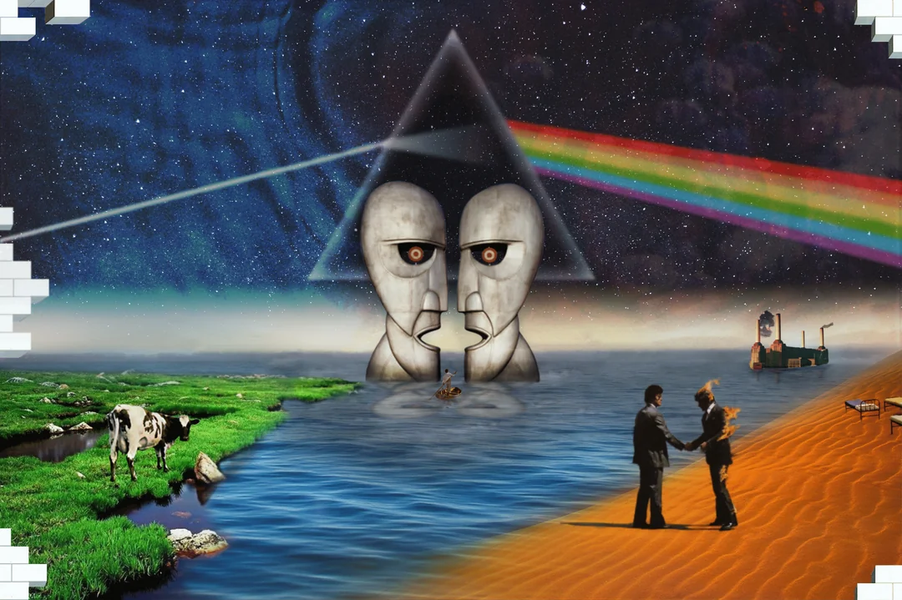

Trupele clasice nu au fost importante doar pentru că au vândut multe albume, ci pentru că au schimbat felul în care oamenii ascultau muzica. Albumele erau ascultate cap-coadă, nu doar piesă cu piesă.
Pink Floyd a transformat rock-ul într-o experiență conceptuală, folosind sunete atmosferice, versuri filosofice și spectacole vizuale. Black Sabbath a pus bazele heavy metalului prin riff-uri grele și teme întunecate.
Jimi Hendrix a schimbat complet modul în care era folosită chitara electrică, iar Marillion a dus mai departe spiritul progressive rock-ului într-o perioadă în care muzica devenea tot mai comercială.
| Artist / Trupă | Stil muzical | Contribuție |
|---|---|---|
| Pink Floyd | Progressive Rock | Albume conceptuale și atmosferă sonoră complexă |
| Black Sabbath | Heavy Metal | Considerați pionieri ai heavy metalului |
| Jimi Hendrix | Blues Rock / Psychedelic Rock | A revoluționat chitara electrică |
| Marillion | Neo Progressive Rock | A readus rock-ul progresiv în atenție în anii 80 |
Exemple de pagini unde se pot afla mai multe informații:
Pink Floyd | Black Sabbath | Jimi Hendrix | Marillion